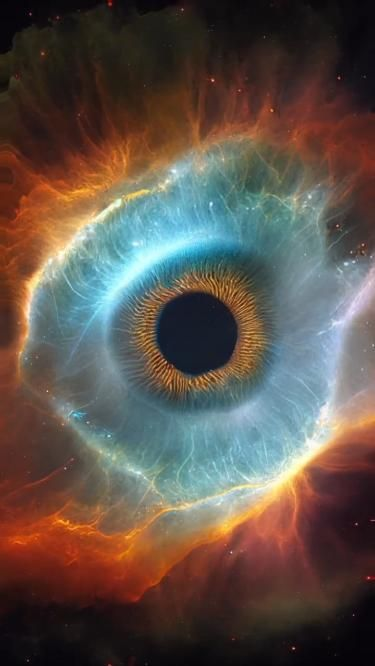
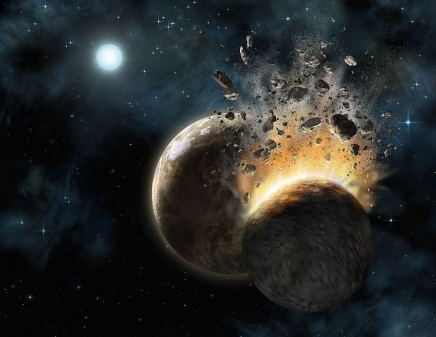
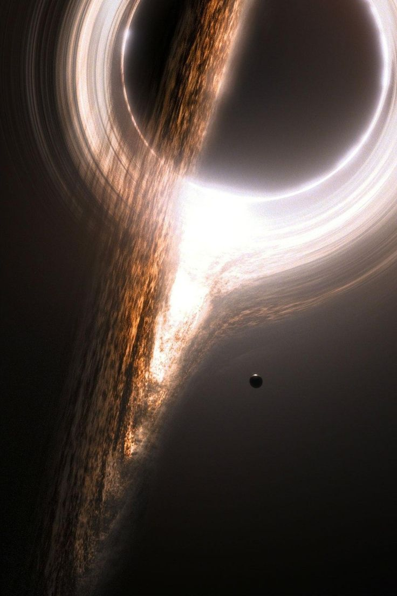
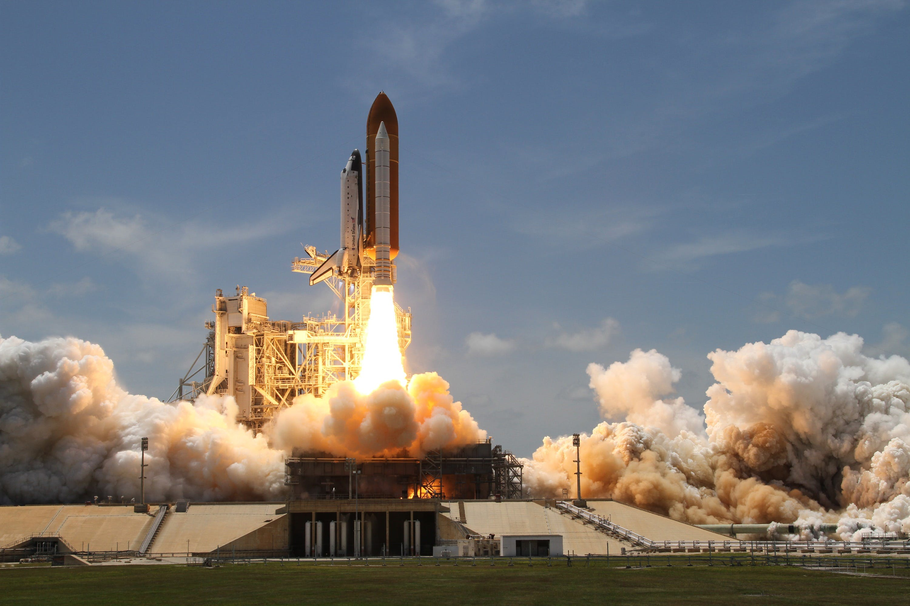

Univerzumunkban az exobolygókon kívül számos más érdekes objektum van jelen.
Cat's Eye Nebula
A Cat's Eye nebula az alakjáról kapta nevét. A nebulák általában csillagrobbanás maradványai. A robbanás által hagyott por és gázfelhőt William Herschel fedezte fel 1786 február 15-én. A csillagköd megközelítőleg 1000 éves lehet.

Vándorló bolygók
A vándorló bolygók olyan égitestek melyek nem keringenek csillagok körül valamint nem rendelkeznek holdakkal. Ezek a bolygók az univerzum ürességét járják. Egy ilyen (mars méretű) bolygó ütközött a Földdel melynek következményében létrejött a holdunk.

Fekete lyukak
A fekete lyukak hatalmas tömegüknek köszönhetően képesek meghajlítani a teret. Ennek az anomáliának a segítségével sikerült őket felfedeznünk. Ezek a testek olyan elképzelhetetlenül hatalmas gravitációs erővel bírnak, hogy azt még a fény sem képes túlszárnyalni.

Ember alkotta
A természetesen létrejött képződményeken kívül azonban akadnak ember alkotta remekek is földünk körül, valamint jóval azon túl is. A Voyager-1 és -2 testvérszondák már elhalattak a Neptunusz röppályálya mellett és megkezték magányos, örök útjukat a semmibe.
